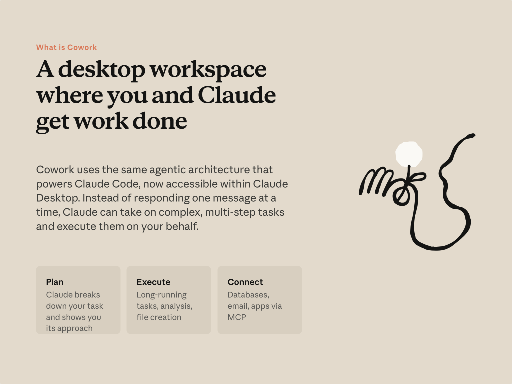
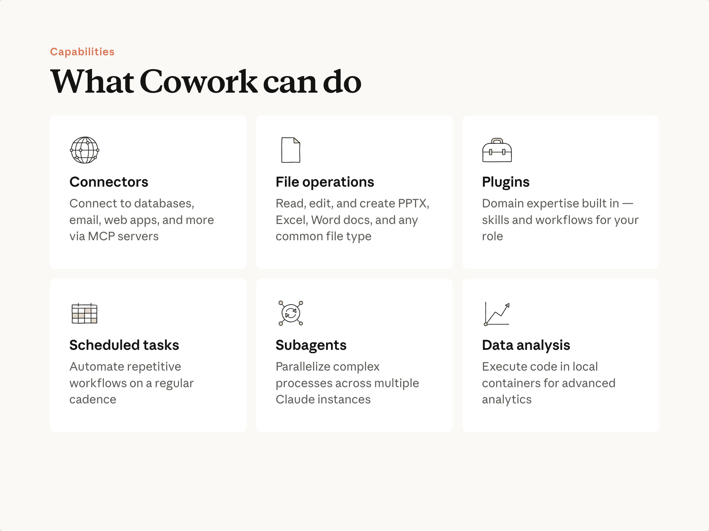

예상 소요 시간: 15분
학습 목표
이 레슨을 마치면 다음을 할 수 있습니다:
- Cowork가 무엇인지, 그리고 Claude와의 채팅과 어떻게 다른지 설명할 수 있습니다
- Cowork를 지식 업무에 유용하게 만드는 핵심 기능을 설명할 수 있습니다
- 어떤 작업이 Cowork에 적합하고 어떤 작업이 일반 채팅에 적합한지 구분할 수 있습니다
동영상: Cowork 소개
핵심 내용
- Cowork는 Claude Code와 동일한 아키텍처를 기반으로 구축되었습니다 . Claude Code는 프로덕션 소프트웨어를 작성하고 배포하는 데 사용되는 에이전트 시스템입니다. 이제 그 기능이 지식 업무에도 활용될 수 있습니다: 분석, 조사, 작성, 그리고 매일 만들어내는 문서들.
- 변화는 대화에서 위임으로의 전환입니다. 텍스트를 붙여넣고 텍스트를 돌려받는 대신, 작업을 설명합니다. Cowork가 계획을 세우고, 작업을 진행하며, 완성된 파일을 드라이브에 전달합니다.
- Cowork는 여러분의 작업이 있는 곳에서 동작합니다. 컴퓨터의 파일을 읽고 쓰며, 사용하는 도구에 연결하고, 자리를 비운 동안에도 긴 작업을 계속 진행합니다.
- 주도권은 여러분에게 있습니다. 작업이 시작되기 전에 계획을 확인할 수 있으며, 언제든지 중단하거나 방향을 바꿀 수 있습니다.
채팅과 무엇이 다른가

아마도 채팅 방식으로 Claude를 사용해본 적이 있을 것입니다: 질문을 하고 답을 받고, 문서를 붙여넣고 요약을 받는 방식입니다. 그 방식은 유용하며 앞으로도 유용할 것입니다. 하지만 특정 종류의 작업은 여전히 여러분의 몫으로 남습니다—도구 간에 정보를 이동하고, 결과물을 조합하고, 그 사이의 단계들을 처리해야 합니다.
Cowork는 그런 작업에 적합한 교환 방식을 바꿉니다. 여러분은 원하는 결과를 설명합니다. Claude가 단계를 계획하고, 수행하며, 결과물—어딘가에 붙여넣을 텍스트가 아닌 드라이브의 실제 파일—을 만들어냅니다.
이를 가능하게 하는 세 가지:
- 계획(Plan). 여러 단계로 이루어진 작업의 경우, Claude가 시작하기 전에 접근 방식을 보여줍니다. 검토하고, 필요하면 조정하고, 승인합니다.
- 실행(Execute). 작업은 컴퓨터의 격리된 환경에서 필요한 만큼 실행됩니다. 파일 생성, 분석, 장시간 작업—실행해두고 나중에 확인하면 됩니다.
- 연결(Connect). Cowork는 작업이 있는 시스템에 접근할 수 있습니다: 이메일, 공유 드라이브, 이미 로그인되어 있는 도구들. 수동 복사·붙여넣기 없이 컨텍스트가 Claude에 전달됩니다.
Cowork가 할 수 있는 것

이후 레슨에서 각각을 더 깊이 살펴볼 것입니다. 지금은 전체 지도를 확인하세요:
- 커넥터(Connectors) — Claude가 기존 도구에 접근합니다: 이메일, 메시징, 공유 드라이브 등. 컨텍스트가 자동으로 전달됩니다.
- 파일 작업(File operations) — 드라이브의 실제 파일을 읽고, 편집하고, 생성합니다: 프레젠테이션, 스프레드시트, 문서. 완성된 파일이 드라이브에 저장됩니다.
- 플러그인(Plugins) — Cowork에 내장된 도메인 전문 지식입니다. 각 플러그인은 특정 기능에 대한 지식과 워크플로우를 제공하므로, Claude가 전문가처럼 작업에 접근합니다. 플러그인은 역할에 맞는 기술, 커넥터 등을 하나의 패키지로 묶습니다.
- 예약 작업(Scheduled tasks) — 반복적인 주기로 워크플로우를 실행합니다. 직접 기억해서 해야 했던 작업이 자동으로 처리됩니다.
- 서브에이전트(Subagents) — 병렬 처리입니다. 작업에 독립적인 부분이 많을 때, Cowork가 동시에 처리합니다.
- 로컬 계산(Local computation) — 파일에서 직접 코드를 실행하고 결과를 저장합니다. 업로드·다운로드 과정이 필요 없습니다.
Cowork를 사용해야 할 때
Cowork와 채팅은 서로 다른 형태의 작업에 적합합니다. 유용한 질문: 이 작업이 파일, 연결된 도구를 다루거나 실제 출력 파일을 만들어야 하는가? 그렇다면 Cowork가 적합합니다. 또 다른 신호: 채팅에서 비슷한 작업을 시도했는데 공간이 부족하거나 대화 한도에 부딪혔다면, Cowork는 그 규모를 처리하도록 설계되었습니다.
열어볼 수 있는 완성된 파일을 원할 때, 드라이브의 파일이나 연결된 도구를 다루는 작업일 때, 처리할 단계나 항목이 많을 때, 또는 다른 일을 하는 동안 실행되도록 두고 싶을 때는 Cowork를 선택하세요. 직접 다듬을 답변이나 초안을 원할 때, Claude에게 필요한 모든 것이 한 번의 붙여넣기에 담길 때, 또는 차례로 함께 생각해나가고 싶을 때는 채팅을 선택하세요.
Claude에게 무엇을 어떻게 위임할지 결정하는 방법에 대한 자세한 내용은 AI Fluency 강좌 를 참조하세요.
실습해보기
다음으로 넘어가기 전에, 이번 주 작업 중 Cowork에 적합한 작업을 하나 생각해보세요: 파일, 도구, 또는 직접 조합해야 하는 완성된 결과물이 포함된 작업입니다. 기억해두세요—레슨 3에서 사용하게 됩니다.
다음 내용
다음 레슨에서는 Cowork를 열고 폴더를 지정합니다—모든 작업의 첫 번째 단계입니다.
Cowork의 설계와 목적에 대한 자세한 내용은 Claude Cowork: 리서치 프리뷰 를 참조하세요.
피드백
강좌를 진행하면서 배운 개념을 업무에 어떻게 활용하고 있는지 알려주시면 감사하겠습니다. 여기 에서 피드백을 공유해주세요.
저작권 및 라이선스
Copyright 2026 Anthropic. All rights reserved.